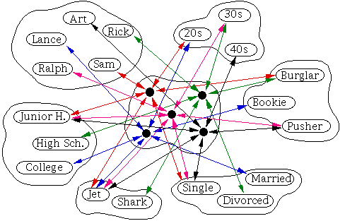
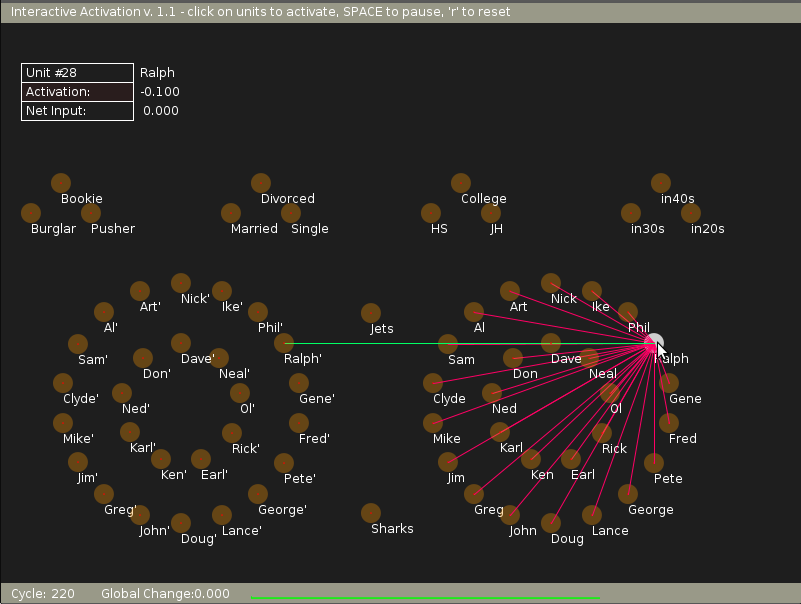
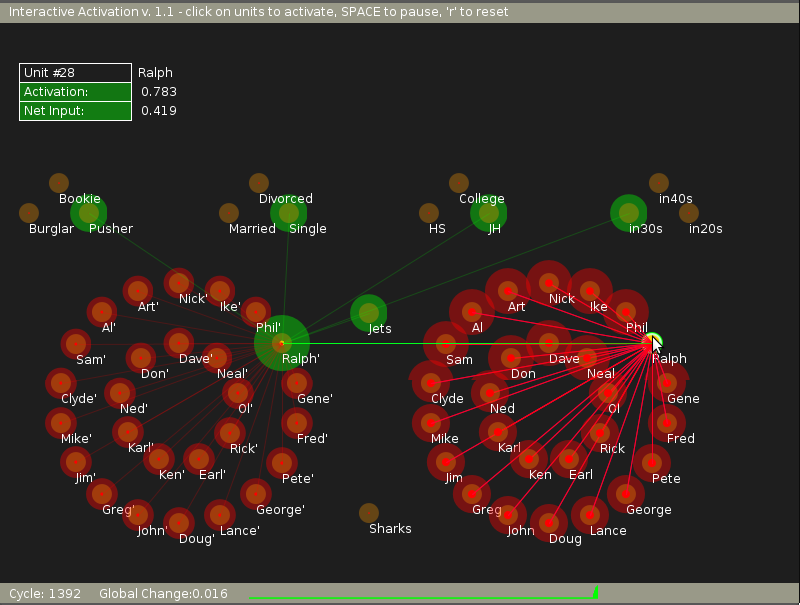
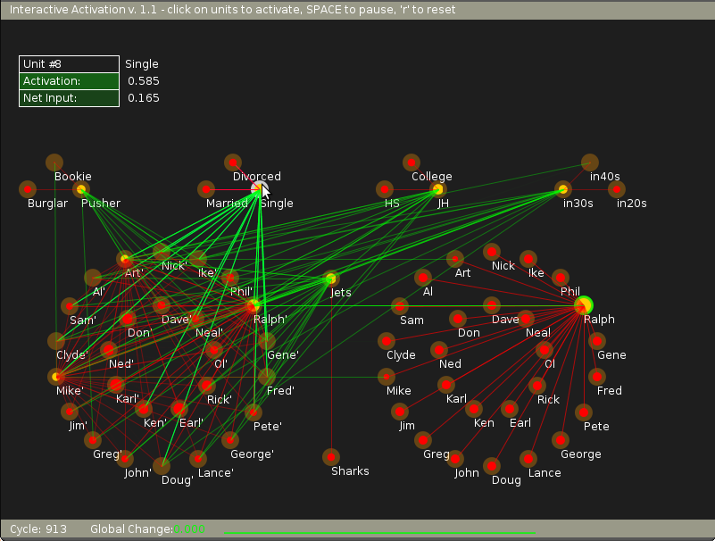

Parallel and distributed processing - I: Interactive activation and competition models
PDP Model Development
This model is illustrated by the help of Jets and Sharks database described in [McClelland, 1981] and also given in the following table.
| Name | Gang | Age | Education | Marital Status | Occupation |
|---|---|---|---|---|---|
| Art | Jets | 40s | Junior High | Single | Pusher |
| Al | Jets | 30s | Junior High | Married | Burglar |
| Sam | Jets | 20s | College | Single | Bookie |
| Clyde | Jets | 40s | Junior High | Single | Bookie |
| Mike | Jets | 30s | Junior High | Single | Bookie |
| Jim | Jets | 20s | Junior High | Divorced | Burglar |
| Greg | Jets | 20s | High School | Married | Pusher |
| John | Jets | 20s | Junior High | Married | Burglar |
| Doug | Jets | 30s | High School | Single | Bookie |
| Lance | Jets | 20s | Junior High | Married | Burglar |
| George | Jets | 20s | Junior High | Divorced | Burglar |
| Pete | Jets | 20s | High School | Single | Bookie |
| Fred | Jets | 20s | High School | Single | Pusher |
| Gene | Jets | 20s | College | Single | Pusher |
| Ralph | Jets | 30s | Junior High | Single | Pusher |
| Phil | Sharks | 30s | College | Married | Pusher |
| Ike | Sharks | 30s | Junior High | Single | Bookie |
| Nick | Sharks | 30s | High School | Single | Pusher |
| Don | Sharks | 30s | College | Married | Burglar |
| Ned | Sharks | 30s | College | Married | Bookie |
| karl | Sharks | 40s | High School | Married | Bookie |
| Ken | Sharks | 20s | High School | Single | Burglar |
| Earl | Sharks | 40s | High School | Married | Burglar |
| Rick | Sharks | 30s | High School | Divorced | Burglar |
| Ol | Sharks | 30s | College | Married | Pusher |
| Neal | Sharks | 30s | High School | Single | Bookie |
| Dave | Sharks | 30s | High School | Divorced | Pusher |
An interactive activation and competition network consists of a collection of processing units organized into some number of competitive pools. There are excitatory connections among units in different pools and inhibitory connections among units within the same pool. The excitatory connections between pools are generally bidirectional, thereby making the processing interactive in the sense that processing in each pool both influences and is influenced by processing in other pools. Within a pool, the inhibitory connections are usually assumed to run from each unit in the pool to every other unit in the pool. This implements a kind of competition among the units such that the unit or units in the pool that receive the strongest activation tend to drive down the activation of the other units. The information about such a data, if stored in a computer memory, can be accessed by name or by any other set of items which can serve as a key to a particular set of information. But this requires the method of access to be pre-programmed in the system. Moreover, certain characteristics of the data like the distribution of persons in different age groups or the 'common' characteristics among some persons, etc, can be obtained only by programming explicitly to derive the information embedded in the data. In other words, any information in the data has to be sought explicitly. On the other hand human memory stores the information in the data in terms of patterns, and these patterns are useful to recall information even with partial clues. These features of the human memory can be demonstrated through representation in the form of a Parallel and Distributed Processing model, as shown in the figure below.
Figure 1: Figure illustrating the units and connections among those units in different pools. Though here only some units are shown, but actually we have 27 units in the 'Name' pool. Similarly there are 27 units in the 'Instance' pool, 2 in the 'Gang' pool and then 3 in rest of the other 4 pools.
In the figure, the units are organized into different pools, such as 'Name' pool, 'Age' pool, etc. The number of units in each pool corresponds to different possibilities in that category, as for example, 27 units in the 'Name' pool and 3 units in the 'Age' pool, etc. There are as many pools as there are categories (6 in this case), plus one additional pool called the 'Instance' pool.
PDP Model Description
Units within each pool are connected in an inhibitory manner, i.e., the output of each unit is fed with a negative weight to all other units in the same pool. The units in each pool are connected to the corresponding units in the instance pool in an excitatory manner, i.e., the connection weights are positive. For example, here, the 'Ralph' unit in the 'Name' pool, 'Jets' unit in the 'Gang' pool, 'in 30s' unit in the 'Age' pool, 'JH' unit in the 'Education' pool, 'pusher' unit in the 'Occupation' pool and 'Unmarried' unit in the 'Marital status' pool are all connected to the 'Ralph' unit in the 'instance' pool with positive weights. The units in the 'instance' pool are called "hidden" units, since by design, they are not accessible for any input or output. The units in all other pools are "visible" units. Only 5 of 27 units are shown in the 'Name' pool and the 'instance' pool for illustration. Also, the inhibitory connections within each pool are not shown in the figure.
There are a total of 68 units in the model. Each unit computes a weighted sum of the input values to the unit fed from other units, as well as from external inputs, if any. The weighted sum or the activation value is passed through a nonlinear output function, which gives as output the activation value itself, if the sum lies between some prespecified minimum and maximum values. Otherwise, the function gives either the minimum value at the lower limit or the maximum value at the upper limit. The state of the model is described as the collection of outputs of all the 68 units at any given instant of time. Starting from any state, the next state can be computed by selecting a unit at random and computing the weighted sum of its inputs first and then the output of the unit. Due to change in the value of the output of this unit, the model goes to a different state. Then another unit is selected at random, and the new state for that unit is determined. All the units are updated by selecting the units in a random sequence, to compute one cycle of activation dynamics. After several cycles, the model is guaranteed to reach a stable equilibrium state, when there will not be any further change in the state of the model.
For each set of external inputs, the model reaches a stable state eventually. From the stable state the stored data can be read out. For example, if we want the data about 'Ralph', the output (state) of the 'Ralph' unit in the 'Name' pool is set to maximum. Starting with some initial values of state on other units, the network states are computed for several cycles, until an equilibrium state is reached. At equilibrium, there will be one unit in each pool having large positive value. Those units correspond to the data that belongs to 'Ralph'.
Features Demonstrated By The Model
The model demonstrates several features of the functioning of the biological neural network in human memory. Some of the features are: (a) Retrieving an individual's data from his name, (b) retrieval from a partial description, (c) graceful degradation, (d) default assignment, and (e) spontaneous generalization for novel inputs. The most important point is that the model stores the patterns embedded in the given data. Therefore from the model, one could get even such information for which the model was not explicitly designed. For example, in the feature of default assignment, the model gives possible good guess about missing information, even though we do not know certain things about an individual. It evaluates the relative strengths of the attributes from the given data in a complex manner, which is difficult to describe explicitly. Thus, this model clearly brings out the distinction between computer memory and human memory for storage and retrieval of information. The model also brings out the features of content-addressable memories and associative memories for information retrieval. Note the distributed nature of the memory in this model, in the sense that, the information is distributed in the weights throughout the network. Also note the parallel and distributed nature of the activation dynamics when the model is realized in hardware, and also when it is allowed to relax naturally changing from one state to another until an equilibrium state is reached from the given initial state and external input. Spontaneous generalization is the ability to provide a generalized picture of what is common to the memories that match the cues which are too vague to match a particular memory. If weights between i'th and j'th components is +ve, q = weight * activation excitation += q for all units.
if weights between i'th and j'th components is -ve,
q = weight * activation
inhibition += q for all units.
net input = (estr * external input) + (beta * excitation) + (gamma * inhibition)
delta excitation = (actmax - activation) * net input - decay * (activation - actrest)
activation += delta excitation
g Delta = g Delta + absolute(delta excitation)
delta inhibition = (activation - actmin) * net input - decay * (activation - actrest);
activation += delta inhibition;
g Delta = g Delta + absolute(delta inhibiton);
For more information and help regarding IAC, click here
Illustration of Interactive Activation and Competition Model
There are a total of 68 units in this model. Each unit computes a weighted sum of the input values to the unit, fed from other units as well as external inputs, if any. The weighted sum or the activation value is passed through a non-linear output function, which gives as output, the activation value itself, if the sum lies between some prespecified minimum and maximum values. Otherwise, the function gives either the minimum value at lower limit or the maximum value at the upper limit. The state of the model is described as output of all the 68 units at any given instance of time. Starting from any state, the next state can be computed by selecting a unit at random and computing the weighted sum of its inputs first, and then the output of the function.
Due to change in the value of the output of this unit, the model goes to a different state. Then another unit is selected at random and the new state for that unit is determined. All the units are updated by selecting all the units in a random sequence, to compute one cycle of activation dynamics. After several cycles, the model is guaranteed to reach equillibrium state, when there will not be any further change in the state of the model.
For each set of external inputs, the model reaches a stable state eventually. From the stable state the stored data can be read out. For example, if we want the data about 'Ralph', the output (state) of the 'Ralph' unit in the 'Name' pool is set to maximum. Starting with some initial values of state on other units, the network states are computed for several cycles, until an equilibrium state is reached. At equilibrium, there will be one unit in each pool having large positive value. Those units correspond to the data that belongs to 'Ralph'.
In the experiment here, in the initial state we can see, as illustrated by the following figure, how 'Ralph' unit is connected in an inhibitory sense (illustrated by red connections) with the rest of the members of the 'Name' pool. Also it is connected by an excitatory connection to the unit 'Ralph' in the 'instance' pool (illustrated by a green connection).

Now, when an external input is applied by changing the state of the 'Ralph' unit (as by clicking the mouse over 'Ralph' node in the 'Name' pool) we see that all the nodes settle down to a stable state after sometime.

Finally when we try to read out the data related to 'Ralph' unit from the model, we just need to visit every pool and find out which node has the highest positive value. That data belongs to 'Ralph' unit.

For this experiment, we can provide external bias and hence activation to units of all the pools except the instance pool. The instance pool, which is also known as the hidden pool is not accessible to the end user. Yet we can see the connections within and outside this pool by moving mouse pointer to respective units.